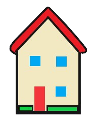

|
 |
Escudo Nacional

| El escudo de armas de la República Dominicana es el emblema heráldico que representa al país y que, junto con la Bandera y el Himno Nacional, tiene la categoría de símbolo patrio. Creado en la época de la proclamación de independencia nacional, en 1844, la historia registra 21 escudos incluyendo el actual, tras experimentar un largo proceso de modificaciones. |